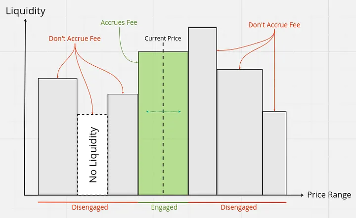
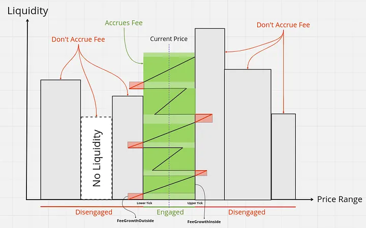

If you are in the web3 space, you often find yourself paying fees for transactions you have requested, but rarely do you consider the process happening behind the scenes. Whether you are a newbie web3 or blockchain developer looking to understand the fee architecture, or simply someone interested in learning more, you are in the right place. So buckle up and enjoy the show 🙂
This year, I analyzed the fee architecture of several web3 platforms and decided to focus on Uniswap. In Uniswap V3, unlike Uniswap V2, liquidity can be added within a specific price range. These price ranges in Uniswap V3 are known as ticks.
While I won't dive into the details of ticks or the equations that relate ticks to other parameters (we'll just have a brief explanation further) it's important to understand that when adding liquidity, we can define specific boundaries. When the price reaches these boundaries, the protocol can use our liquidity to perform a swap. Consequently, even though we add our assets to a specific range, fees only accrue to us when the price is within our predefined liquidity range.
Let me illustrate what I mean; the concepts I've described are visualized below:

When a swap is executed in Uniswap V3, the swap's fees are collected when the price enters a specific range associated with that swap.
Since smart contracts cannot handle synchronous tasks automatically, our fee monitoring process relies on some global variables within Uniswap.
Let's explore how these fees are calculated given the constraints imposed on us by the Ethereum Virtual Machine (EVM).
In Uniswap V3, each token pair is known as a pool. Each pool has two significant state variables that track fees: feeGrowthGlobal0X128 and feeGrowthGlobal1X128.
These two variables track the total accumulated fees per unit of liquidity. The first variable is associated with token X, and the second is associated with token Y in the tokenX/tokenY pair.
In fact, the fees associated with a specific range are calculated based on these two parameters.
When a swap is performed and the price increases or decreases, the price will change (as expected), and feeGrowthGlobal0X128 and feeGrowthGlobal1X128 will also change during the swap process.
I want to go ahead with a scenario in which you want to swap in a specific price range and explain step-by-step operations that will be accomplished during this process focusing on fees.
The fee system of UniswapV3 is a kinda incentive base, which means that how much you add more liquidity to a specific position (each position has unique price level boundaries) you will be eligible for more fees when you want to collect it (We will discuss the collect function in each pool later).
This is why we tell this feeGrowth, this growth depends on the time that you add liquidity to that position.
NOTE that the feeGrowth values are not the amount of tokens that a liquidity provider will obtain after collecting his own fee, imagine this value as the fee amount weight that a LP will eligible to collect that. they will multiply to liquidity amount that you'll see it later in this essay.
BTW, for effecting the fee values related to that position, we should first know how the position's feeGrowthInside will calculate. For better understanding let's refer to our last diagram again.

In this diagram, I bring the assumed fee growth line to indicate the feeGrowth concept (Note that the height of this growth line isn't measurable based on the liquidity height, as they're unrelated. I just visualized some assumed lines).
the darker-green areas in the engaged section (the position price level boundaries) are known as feeGrowthInside and the red areas are known as feeGrowthAbove and below.
while this swap is accomplished, the position and tick should be updated, so what does that mean and how does this happen?
Let's recap with a definition of these two concepts:
A position is a mapping inside each pool that maps a bytes32 value (constructed based on the owner's address of that position and the price level boundaries related to that position, Aka the upperTick and lowerTick) to a struct containing the position's information.
The position info records several parameters, such as liquidity, feeGrowthInside for both tokenX and tokenY, and the amounts of tokens owed to the LPs, aka tokenOwed0 and tokenOwed1.
A Tick refers to a specific price point within a pool and each tick represents a discrete shift in the price ratio of the trading pair.
Now, when a swap occurs, the first thing that happens is the update of feeGrowthInside (which we discussed earlier). This update is done using the tick.getFeeGrowthInside function from the Tick library. This function calculates the feeGrowthInside, similar to the diagram we looked at earlier. The feeGrowthInside is determined based on two parameters: feeGrowthGlobal, feeGrowthBelow, and feeGrowthAbove, like this:
feeGrowthBelow is related to the ranges below the lowerTick, and feeGrowthAbove is related to the ranges above the upperTick.
After calculating feeGrowthInside using the above equation, we update the data related to the position where the swap occurred. We do this using the position.update function, passing in the feeGrowthInside amounts we calculated earlier as inputs.
ultimately, in this function, we'll calculate the amount of fee that this position owes to its liquidity providers. this amount will be calculated based on this equation:
This is why we said the fee owed per unit of liquidity. That number associated with the fee is not the actual fee amount. Instead, it's a unit of liquidity that will ultimately be multiplied by the amount of liquidity. In the end, this calculated feeOwed will be added to the total fee owed by the position, and the feeGrowthInside will be updated to feeGrowthInsideLast, becoming the "last" value for the next swap.
Another question that might arise is: why do we divide by 2¹²⁸? The answer is kinda obvs, Uniswap V3 uses fixed-point arithmetic to handle large numbers with high precision, storing these numbers with 128 bits of precision. This approach provides a large scale of precision for each number, ensuring the accuracy of calculations. At the end, we divide by 2¹²⁸ to convert these high-precision values back to a regular integer representation i.e. the amount of fee owed by the position in this scenario.
Now let's imagine you're one of those liquidity providers that provided liquidity on that position in which that swap occurs and now you want to collect your share from the fee accumulated during this swap.
So in this scenario, UniswapV3 provides collect function for you.
This is the actual function code base:
function collect(
address recipient,
int24 tickLower,
int24 tickUpper,
uint128 amount0Requested,
uint128 amount1Requested
) external override lock returns (uint128 amount0, uint128 amount1) {
Position.Info storage position = positions.get(msg.sender, tickLower, tickUpper);
amount0 = amount0Requested > position.tokensOwed0 ? position.tokensOwed0 : amount0Requested;
amount1 = amount1Requested > position.tokensOwed1 ? position.tokensOwed1 : amount1Requested;
if (amount0 > 0) {
position.tokensOwed0 -= amount0;
TransferHelper.safeTransfer(token0, recipient, amount0);
}
if (amount1 > 0) {
position.tokensOwed1 -= amount1;
TransferHelper.safeTransfer(token1, recipient, amount1);
}
emit Collect(msg.sender, recipient, tickLower, tickUpper, amount0, amount1);
}this is it, this ordinary function is the saver of the whole protocol at the end. Liquidity providers ultimately could call this function to withdraw their own reward; as you can see we will extract the LP's individual position and get the owed amount that we calculated earlier to transfer it to that LP guy.
While reading this article, you might wonder, "How does the protocol itself make money?" Well, in Uniswap V3, there's a mechanism for that called the Protocol Fee.
Protocol fees come from a small portion of swap fees that are set aside and saved as protocol fees. These are later collected by the Factory contract owner, which in this case is Uniswap V3.
This mechanism is built into the UniswapV3Pool contract. In the main struct of this contract, called Slot0, there's a variable named feeProtocol that determines how much the protocol takes from swap fees (actually it's a denominator of fees). Additionally, there's another struct called ProtocolFees, which keeps track of the accumulated protocol fees for the tokenX/tokenY pair.
These amounts increase within the swap function (I won't dive into this part because it's a huge function beyond the scope of this article).
In one section of the swap function, we decrease the (feeAmount/protocolFee) from the calculated feeAmount and then add it to the protocolFee values.
In the end, the factory owner (Uniswap V3) can call a function called collectProtocol to withdraw their portion of the protocol fee.
They might use it to buy a Gucci watch for their girlfriend, only to have her leave them in the end with that portion of the fee. So, we and the factory owner can cry together at the end of the story.
Yes, all these implementations and engineering efforts for the protocol ultimately boil down to buying some luxury items for a traitorous gf :)
In conclusion, the sophisticated fee system and architecture of Uniswap V3 demonstrate the innovative approach taken to ensure the protocol's sustainability and growth. By efficiently collecting and distributing fees, Uniswap V3 not only rewards liquidity providers but also maintains a robust mechanism for protocol earnings. This detailed and well-thought-out system underscores the complexity and ingenuity behind decentralized finance.